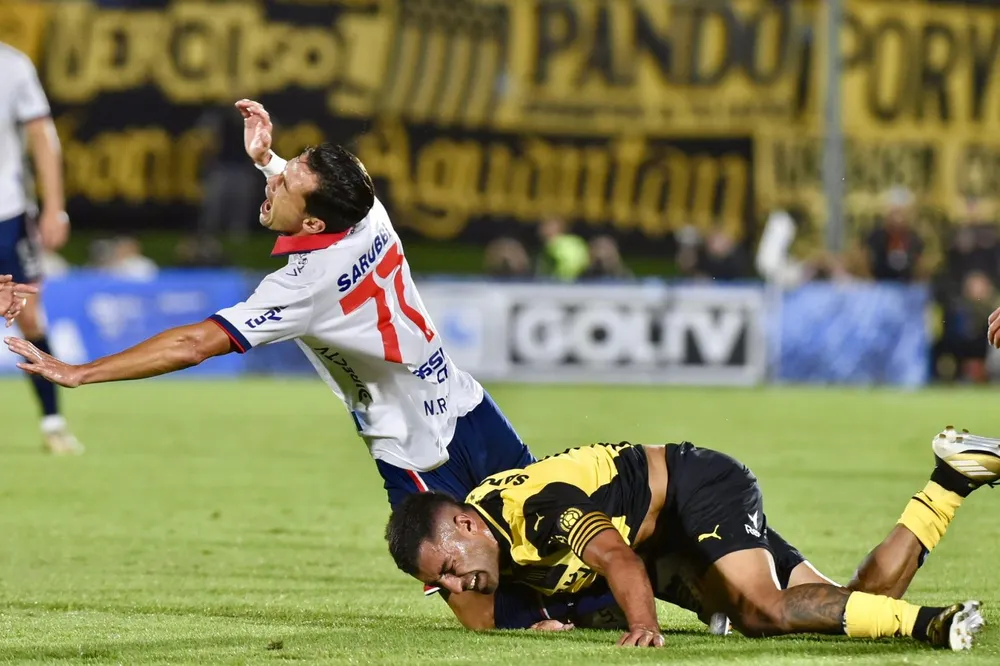

Peñarol no logra quedarse con el Clasico de pretemporada

Clásicos, tanto Peñarol como su rival de toda la vida sin importar el contexto del cotejo clásico, salen a la cancha con un sólo pensamiento: ganarlo.
Un partido en un principio con un claro dominio del carbonero el cual tenía mejores llegadas, sin embargo a pesar de rápidamente ponerse en ventaja a los 6 minutos del partido con un gol a través de una gran definición de Eduardo Darias, lo cierto es que el gol más que un alivio fué pura frustración, poco a poco comenzaban a llegar los ataques del tradicional rival al área mirasol.
Descuidos y más descuidos, bajo nivel defensivo y una mitad de la cancha frágil la cuál dejó muchos espacios durante el encuentro, todo eso llevo a que Nacional empatara el partido a poco más de terminar el primer tiempo. Inicia el segundo tiempo y se nota una leve pero notoria mejoría, el aurinegro ataca más, llega más, genera mejor juego, sin embargo no concreta nada, no finaliza jugadas y los tiros que se logran se van desviados. Por otro lado el conjunto albo también tiene sus llegadas en respuesta a los ataques carboneros.
Luego de un segundo tiempo frenético por momentos y con varias llegadas de ambos lados, un partido que hasta ese momento parecía parejo, más que nada por los errores defensivos de ambos equipos. En los minutos finales el equipo albo concreta un gol de forma casi inesperada para Peñarol.
Después de ese gol el equipo en un córner cerca de los minutos finales, en un afán desesperado por empatar el encuentro y hacer que su resolución sea mediante la vía de los penales, descuida su propio arco ocasionando el tercer gol del tradicional rival.
Y así termina este clásico con un claro ganador pero no tanto merecido, ambos equipos cometieron errores. Peñarol no se siente seguro jugando estos clásicos hace ya bastante tiempo, la última victoria jacta del año 2023, sin dudas un dato que mantiene inquieto a más de uno, Peñarol debe y tiene que ganar el clásico de la Supercopa 2025. Muchísimas cosas a mejorar de cara al próximo clásico y de cara al resto del año, confiamos plenamente en Diego Aguirre, pero sin dudas que las cuestiones acerca del equipo son varias.